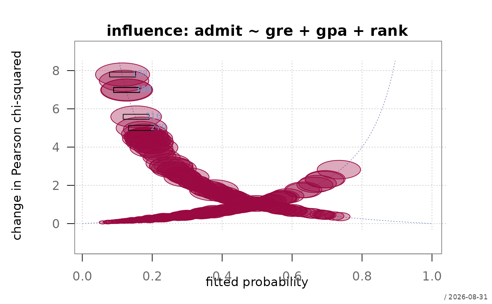
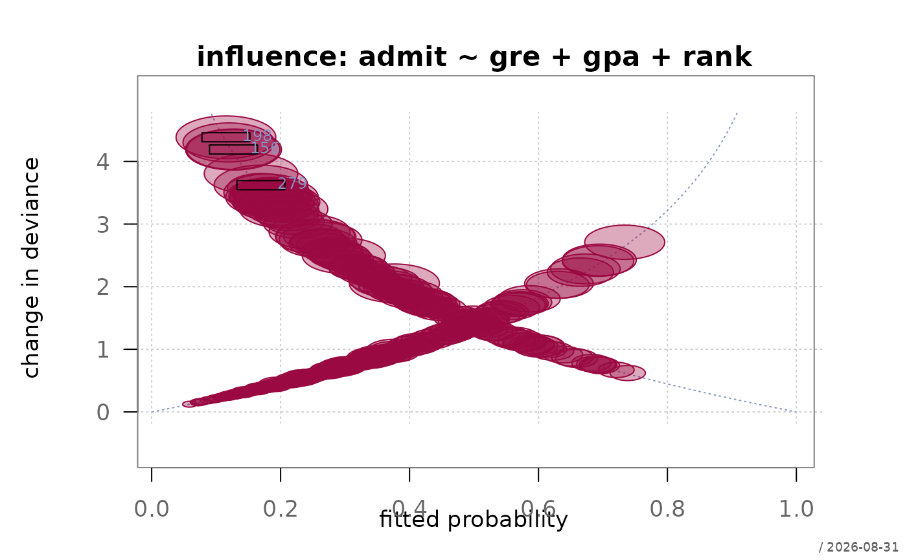

Plots a lack-of-fit measure against the fitted probabilities, with the symbol area proportional to Cook's distance. Poorly fitted observations and influential ones are two different things, and this puts both in one panel: the height says the model does not describe the point, the size says the point moves the model.
Usage
plotInfluence(
x,
main = NULL,
xlab = "fitted probability",
ylab = NULL,
xlim = NULL,
ylim = NULL,
metric = c("chisq", "deviance"),
threshold = NULL,
col = .useTheme,
border = .useTheme,
cex = 1,
grid = .useTheme,
box = .useTheme,
reference = TRUE,
labels = 5,
stamp = .useTheme,
...
)Arguments
- x
a fitted logistic model of class
"FitMod"(fitted withfitfn = "logit") or a binomialglm.- main
main title.
NULL(default) derives one from the model formula;"",NAorFALSEsuppress it.- xlab, ylab
axis labels.
NULLderives them frommetric.- xlim, ylim
axis limits.
- metric
the change statistic on the vertical axis,
"chisq"(default) or"deviance". See Details.- threshold
horizontal reference line marking a poorly fitted observation.
NULL(default) draws none for ungrouped data and uses 4 for grouped data (\(m > 1\));NAalways draws none. See the section below for why the usual cut-off does not apply to a binary response.- col, border
fill and border colour of the bubbles.
- cex
scaling factor applied to the bubble areas.
- grid, box
background grid and plot box, following the flexible
TRUE/FALSE/NA/list()pattern.- reference
the two theoretical arms the points fall on at zero leverage.
TRUE(default),FALSE, or a named list passed tolines. Drawn for ungrouped data only.- labels
labelling of the most influential observations. A number (default
5) labels that many largest Cook's distances,FALSEnone,TRUElabels everything abovethreshold, a named list is passed toboxedText.- stamp
corner stamp, passed to the graphics framework.
- ...
further graphical parameters passed to
par()via the internal framework.
Value
invisibly, a data frame with one row per observation and the
columns p, hat, residStd, dChisq,
dDeviance and cook, sorted as the data are.
Details
The vertical axis is one of the leave-one-out change statistics of Hosmer, Lemeshow and Sturdivant (2013), computed from the standardized Pearson residual \(r_{s}\) and the leverage \(h\):
"chisq"\(\Delta\chi^2 = r_{s}^2\), the decrease in the Pearson statistic when the observation is deleted. Values above roughly 4 mark points the model fits poorly.
"deviance"\(\Delta D = d^2/(1-h)\), the same idea on the deviance scale. Less sensitive to a single extreme point.
Cook's distance combines both, \(r_{s}^2 h / \{(1-h)p\}\): a large residual at low leverage changes nothing, and high leverage with a small residual means the model already accommodates the point. Only the product is worth acting on, which is why it is the bubble area rather than a third panel.
The statistics are computed per observation. Hosmer, Lemeshow and Sturdivant define them per covariate pattern, which differs whenever observations share identical predictor values - with a continuous predictor in the model, patterns and observations coincide and the distinction is empty; with purely categorical predictors it is not, and the per-observation version understates the influence of a whole pattern.
What the plot has to look like
With ungrouped data the vertical axis is not free to vary. At negligible leverage, \(\Delta\chi^2\) is \((1-\hat p)/\hat p\) for an event and \(\hat p/(1-\hat p)\) for a non-event, so every point lies on one of two curves: an arm rising to the left (events at small \(\hat p\)) and one rising to the right (non-events at large \(\hat p\)). The tall points at both ends are geometry, not a finding, and reading them as outliers is the standard misreading of this plot.
The two arms are therefore drawn as reference curves (reference).
What is worth looking at is the departure from them: leverage lifts a
point above its arm by the factor \(1/(1-h)\), so vertical distance
from the curve - not height above zero - is what marks an observation
the model cannot accommodate. A raised floor in the middle of the range
and large bubbles spread across it are the other two signatures of a
model in trouble.
References
Hosmer, D. W., Lemeshow, S. and Sturdivant, R. X. (2013) Applied Logistic Regression, 3rd ed., New York: Wiley, ch. 5.
See also
model-diagnostics-overview for an overview of the diagnostics for logistic models in alloy.
Examples
fitLogit <- fitMod(admit ~ gre + gpa + rank, Admit, fitfn = "logit")
plotInfluence(fitLogit)

plotInfluence(fitLogit, metric = "deviance", labels = 3)

inf <- plotInfluence(fitLogit)
 head(inf[order(-inf$cook), ])
#> p hat residStd dChisq dDeviance cook
#> 198 0.1152062 0.01472214 2.791925 7.794846 4.386644 0.01941192
#> 156 0.1269136 0.01487512 2.642585 6.983256 4.190837 0.01757421
#> 279 0.1694514 0.01953410 2.235856 4.999050 3.621114 0.01659959
#> 316 0.1541224 0.01747149 2.363460 5.585945 3.806522 0.01655504
#> 342 0.1265951 0.01385384 2.645018 6.996120 4.191592 0.01638079
#> 319 0.1867088 0.02120991 2.109579 4.450325 3.429142 0.01607274
head(inf[order(-inf$cook), ])
#> p hat residStd dChisq dDeviance cook
#> 198 0.1152062 0.01472214 2.791925 7.794846 4.386644 0.01941192
#> 156 0.1269136 0.01487512 2.642585 6.983256 4.190837 0.01757421
#> 279 0.1694514 0.01953410 2.235856 4.999050 3.621114 0.01659959
#> 316 0.1541224 0.01747149 2.363460 5.585945 3.806522 0.01655504
#> 342 0.1265951 0.01385384 2.645018 6.996120 4.191592 0.01638079
#> 319 0.1867088 0.02120991 2.109579 4.450325 3.429142 0.01607274